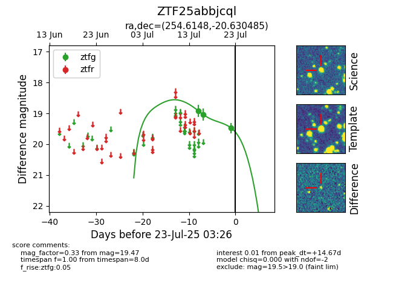

Target ZTF25abbjcql at 2025-07-23 12:37, see:
FINK: fink-portal.org/ZTF25abbjcql
Lasair: lasair-ztf.lsst.ac.uk/objects/ZTF25abbjcql
ALeRCE: alerce.online/object/ZTF25abbjcql
alt names
ZTF25abbjcql (ztf,fink)
coordinates:
equatorial (ra, dec) = (254.6148,-20.63049)
galactic (l, b) = (0.9139,+13.50355)
photometry
last ztfg=19.47
3 ztfg detections
